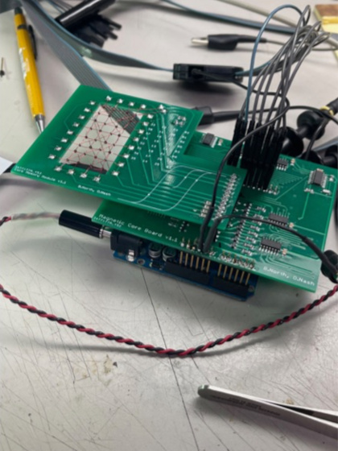

Core memory shield replicated again
2024-09-28
More than thirteen years after we published details of our shield, we were contacted by Michael Seedman, saying he was building the shield, and asking a few questions. After some discussions back and forth, he got it working!
Photos
The assembed driver shield and core daughter-board:

A scope shot showing capture of a switching pulse:
Michael explains:
Probe 1 and 2 are the inputs to the XOR.
Probe 4 is Q! of the HC123, now lined up around the center of a bit.
Bit 0 and Clock are the same signal — the enable bit
Bits 1, 2, 3, 4, 5 are address A0–A4
Bit 6 is the DWR write data
Bit 7 is the DRD read data
You can see the width of the output of the 123 is 464nS.
Thanks to Michael for these photos and permission to use them.